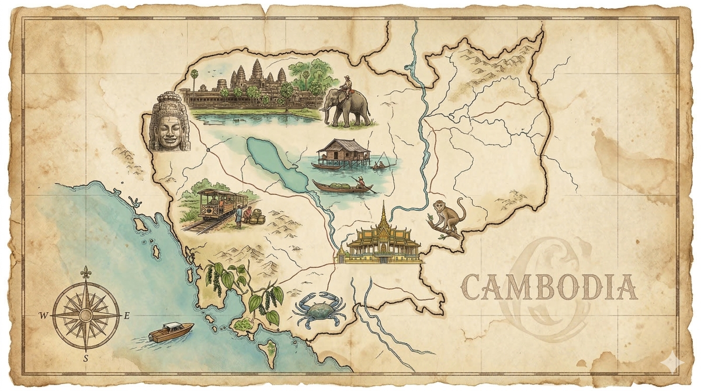
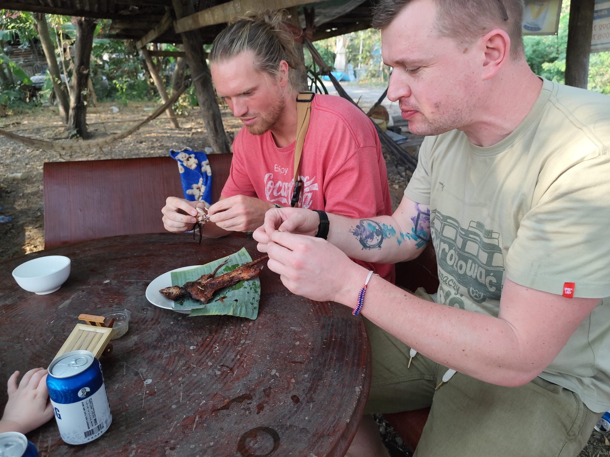

(W kodzie w 'personsData' podmień photoSrc)
Zamieniliśmy polską zimę na zapach cynamonu, wilgotną dżunglę i starożytne tajemnice. Poznaj naszą wielką rodzinną wyprawę.
Wybierz interesujący Cię etap wyprawy z menu po lewej stronie i przeczytaj nasze wspomnienia.
Psst! W tekście ukryliśmy kilkanaście sekretnych niespodzianek dla Lilki i Tomka. Spróbujcie je wszystkie odnaleźć i kliknąć! 🕵️♀️
Tak dokładnie wędrowaliśmy przez Kambodżę! Najedź myszką na punkt, aby zobaczyć szczegóły. Kliknij pinezkę, aby automatycznie przenieść się do wpisu w Dzienniku.

Azja to eksplozja smaków. Porównaj ekstremalne wyzwania z lokalnymi pysznościami.
Plany nieco się zmieniły. Smażonej tarantuli (A-Ping) niestety nie udało się nam nigdzie znaleźć. Ale to nie znaczy, że zabrakło ekstremów! Tata Adam i Tomek podjęli rękawicę.
Prawdziwy azjatycki sprawdzian! Zjedzony ze smakiem zarówno przez Tatę, jak i Tomka.
Kolejny kulinarny hardcore zaliczony z podniesionym czołem na talerzach odkrywców.

Pychotki ostatecznie wygrały starcie! Połączenie słodyczy, egzotycznych owoców i łagodnych smaków to był strzał w dziesiątkę dla najmłodszych.
Absolutny faworyt Lilki! Tradycyjna, przepyszna wołowina z ryżem i specjalnym sosem pieprzowo-cytrynowym.
Słodki ryż pieczony w bambusie i lody serwowane prosto w prawdziwej łupinie kokosa.
Niekończące się ilości przepysznych, świeżych szejków z mango i smoczego owocu (dragon fruit).
Postanowiliśmy spróbować dosłownie wszystkiego! Każdy nowy, egzotyczny owoc, który wpadł nam w ręce na lokalnym targu, został przez nas wspólnie skrupulatnie obrany, przetestowany i skosztowany!
Zjechaliśmy ten piękny kraj wzdłuż i wszerz, pokonując ponad 27 000 kilometrów.
Pogoda, która wyciskała z nas siódme poty
Proporcja lotów kontynentalnych do podróży lądowych
Szczegółowy rozkład kilometrów pokonanych na miejscu w Kambodży